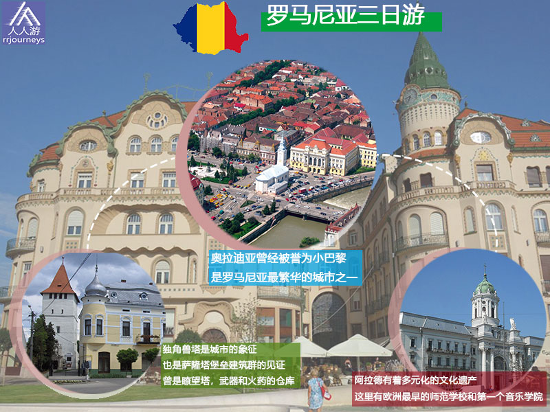
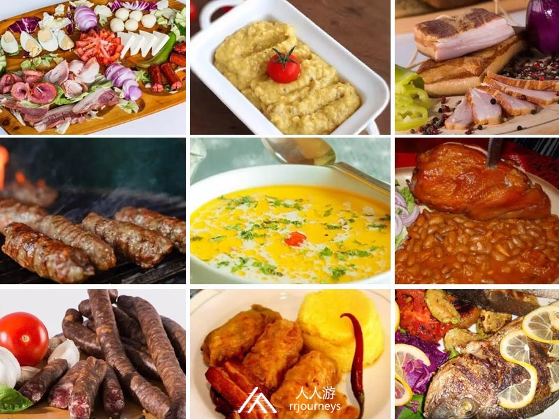
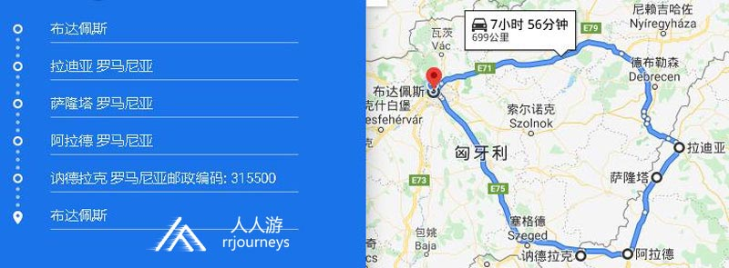

特色旅游
1日游
2-4日游
5-10日游
精品长线旅游
地址：匈牙利 布达佩斯 Budapest-Keleti, 1087
电话：0036-30-9574162
邮件：rrjourneys@gmail.com
网站：http://www.rrjourneys.com
【美景】

【美食】 大盘冷拼Platou taranesc 茄泥沙拉Salata de vinete 烤肉肠Mici 牛肚酸汤Ciorba de Burta 熏香肠Carnati Afumati 酸菜卷玉米糊Sarmale si mamaliga 熏培根Slanina arumata 熏猪肘番茄酱焖黄豆Ciolan afumat cu fasole 罗马尼亚烤鱼

行程路线：

具体行程
DAY 1：布达佩斯—奥拉迪亚
入住地点：奥拉迪亚
罗马尼亚
DAY 2：奥拉迪亚—萨隆塔—阿拉德
入住地点：阿拉德
DAY 3：阿拉德—讷德拉克-布达佩斯
返回布达佩斯
讷德拉克
Romania: Europe’s Most Overlooked Holiday Destination
…That has it all
Romania is one of, if not the most overlooked of European holiday destinations. A quick scratch of the country’s surface reveals that it’s a place that has it all. From unspoilt wilderness to centuries-old castles, from picturesque ski slopes to quiet sandy beaches, from a burgeoning wine and craft beer scene to cities every bit as vibrant as their western counterparts.
时间
地点
景点（可以 +/- ）
入住地点
第一天
布达佩斯出发306公里
奥拉迪亚
Oradea
Black Eagle Palace, Oradea Fortress, 圣母升天圣殿主教座堂, Moskovits Palace, Catedrala Adormirea Maicii Domnului, Oradea Town Hall, Aquapark Nymphaea, Neolog Synagogue Sion, St. Nicholas Cathedral, Tarii Crisurilor Museum
第二天
36公里
78公里
萨隆塔
Salonta
阿拉德
Arad
萨隆塔: Muzeul Arany János, Home Memorial "Arany Janos”,
阿拉德: Water tower水塔, Parcul Copiilor, The Red Church红教堂, Parcul Pădurice, Museum Arad, Mures Floodplain Natural Park
第三天
52公里
228公里到布达佩斯
讷德拉克 Nădlac
阿拉德: Palace of Szantay, Parcul Reconcilierii, House Lockers, Palace of Cenad, Biserica Catolică „Sf. Anton de Padova”
讷德拉克 : Muzeul Digital Pecica / Ferma de Bivoli, Mănăstirea Bezdin
-
6天5夜乌克兰小众深度游
7天6夜克罗地亚、波黑小众
5天4夜波兰、斯洛伐克小众
四天三夜奥地利、斯洛文尼亚
匈牙利最大的滑雪场一日游
6天5夜，奥地利滑雪自由行
7天6夜，奥地利旅游滑雪自
4天3夜，奥地利滑雪自由行
Copyright 2020 www.rrjourneys.com
人人游 旅游官方网站 版权所有 All Rights Reserved